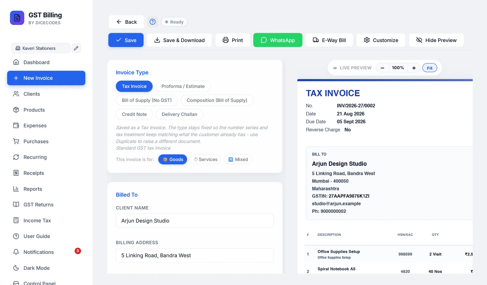

Making an invoice
Every part of the New Invoice screen, from top to bottom: the toolbar, the document type, the client, the items, terms, extra pages, and what happens when you save, print or share.
#How the screen is laid out
Open it with New Invoice in the sidebar, or Ctrl + N. The form is on the left and a live preview of the printed invoice is on the right. From top to bottom, the form has these cards:
- Invoice Type, with the Customize panel when it is open
- Billed To: the client
- Invoice Details: number, dates, place of supply and delivery address
- Line Items
- Terms & Conditions, notes and a private note
- Additional Pages / Sections
The totals are not in the form. They are worked out as you type and shown in the preview.

#The toolbar
The toolbar stays at the top of the screen as you scroll.

| Button | What it does |
|---|---|
| ← Back | Leaves the invoice. If you have changed something that is not saved, you are asked first (see Leaving with unsaved changes). |
| ? | A short how-to for this screen. |
| Save status | Shows Draft - click to complete until the invoice has a client and an item (click it to jump to what is missing), then Not saved yet until you first save it, then Saving…, All changes saved or Ready. |
| Save | Saves the invoice without making a PDF. Ctrl + S does the same. |
| Save & Download | Saves the invoice and downloads the PDF. See Save & Download. |
| Saves the invoice, then prints it. See Printing. | |
| Opens WhatsApp with the invoice details typed in. See Sending on WhatsApp. | |
| E-Way Bill | Tax invoices and delivery challans only. Downloads the e-way bill file. See E-way bill. |
| Customize | Opens the panel that controls what prints, the paper size, currency and more. See Customize: what prints and how. |
| Hide Preview | Hides the preview so the form uses the whole width, handy for long invoices. Show Preview brings it back, and the app remembers your choice. |
#Choosing the document type
The six chips at the top decide the printed title, whether GST is charged, and whether the document counts as a sale in your totals and returns.
| Type | Prints as | Use it for | GST | Counts as a sale? |
|---|---|---|---|---|
| Tax Invoice | TAX INVOICE | A normal sale by a GST-registered business | Yes | Yes |
| Quotation | QUOTATION | A priced offer for work or supply, numbered QUO/…. Convert it to a tax invoice when the client accepts. | Shown | No |
| Proforma / Estimate | PROFORMA INVOICE | A quote before the sale. Prints "This is not a tax invoice" and a faint ESTIMATE watermark. | Shown | No |
| Bill of Supply (No GST) | BILL OF SUPPLY | Exempt goods or services | No | Yes |
| Composition (Bill of Supply) | BILL OF SUPPLY | Sales under the composition scheme. The declaration required by Rule 46A prints automatically. | No | Yes |
| Credit Note | CREDIT NOTE | Returns, a price cut after the sale, or a correction. Its total is subtracted from your sales. | Yes | Subtracted |
| Delivery Challan | DELIVERY CHALLAN | Moving goods without a sale, such as to a job worker or on approval | No | No |
There are seven types. Changing the type also changes the invoice number to that type's series, replacing any number you typed.
Once an invoice is saved, its type is locked. The other chips are greyed out, because the number and the tax already issued to your client must not change. To make a different document from it, use Duplicate on the Dashboard.
#Goods, services or both
Under the type chips, This invoice is for sets which units you are offered:
| 📦 Goods | Units such as Nos, Kg and Pcs. The default. |
| ⏱ Services | Hours, sessions, visits and months. It also reminds you to put a SAC code in the HSN field. |
| 🔀 Mixed | Every unit, unfiltered. |
#Billed To: the client
- Type the nameClicking Client Name lists your saved clients. As you type, the list narrows. Use ↓ ↑ and Enter, or click one. Picking a saved client fills in all their details.
- Or save a new oneFor someone new, type their name and fill in the fields, then click Save "name" as new client to keep them for next time. You do not have to: an invoice can go to a name that is not saved.
- Check the address and GSTINAddress, country, city, PIN, state and GSTIN print on the invoice.
A saved client's pencil icon opens their details for editing. Their email, phone and SEZ setting are only edited there, not on the invoice: see Adding and editing a client. A client can also have a preferred paper size, currency and auto-print setting, which are applied when you pick them on a new invoice.
Changing the country clears the state, since each country has its own list.
#What the GSTIN check tells you
When you leave the GSTIN box, the app reads the number. This works offline, with no GST portal lookup.
| Message | Meaning |
|---|---|
| ✓ Registered in state. State filled in. | The state was blank, so it has been filled in from the first two digits. |
| ✓ Registered in state. | The GSTIN and the state agree. |
| ⚠ This GSTIN is registered in state, but the state says other state. | Check which is right. The tax split follows the state and place of supply. |
| ⚠ This GSTIN fails its own checksum. Check for a typo. | Every GSTIN ends with a check character. This one does not add up, so a character is almost certainly mistyped. |
These are warnings only. They never stop you saving.
#Using a client's credit
If the client overpaid on earlier invoices, a banner shows how much credit they have and where it came from. On a new invoice you can:
- type an amount to use, or click Apply full to use as much as this invoice needs;
- click Skip to use none;
- tick Auto-apply available client credit on future invoices to have it used automatically.
When you save, the credit is recorded as a payment on this invoice.
#Invoice Details
| Field | What to know |
|---|---|
| Invoice Number | Filled in with the next number for this type. It is only taken when you first save, so an invoice you abandon does not use up a number. If someone else's invoice took it meanwhile, yours gets the next free number and you are told. See Invoice number format. |
| Invoice Date | Today, unless you change it. |
| Due Date | Blank unless you set it. Once it passes, an unpaid invoice becomes Overdue. |
| Place of Supply | Where the goods or services are supplied. Leave it on Defaults to Client State unless the delivery is in a different state from the client's address. The tax split follows it. Not shown for bills of supply, composition bills or delivery challans. |
| Original Invoice Reference | Credit notes only: the invoice it is against, such as INV/2026-27/0001. It prints as "Against Invoice". |
| Ship to same as bill-to address | Ticked by default. Untick it to enter a delivery address, city, PIN and state. The invoice then prints a separate SHIP TO block. |
#Order, dispatch and reference details
Under Invoice Details, Order, dispatch & reference details opens a set of optional fields, the boxes a Tally invoice carries:
work details, revision no, vehicle no, service period from and to, buyer's order no and order date, reference no & date, other references, delivery note and its date, dispatch doc no, dispatched through, destination, mode or terms of payment, and terms of delivery.
Only what you fill in prints. The Tally style design shows them in its reference boxes; the other designs list them under Bill To. The section stays open on an invoice that has any of them.
#Line items
Each row has these fields:
| Field | What to know |
|---|---|
| Description | The item name. Typing searches your products by name or HSN; picking one fills in the HSN, rate, unit and GST rate, and links the row to the product so its stock is counted. |
| HSN/SAC | For common codes the app knows the usual GST rate, and shows it in green under the box. If the row's rate is still 18% or 0%, it is changed to match. |
| Qty | 1 to start. Clicking the box selects the number, so typing replaces it. |
| Unit | From the list for Goods, Services or Mixed. ＋ Add custom… adds your own unit (up to 20 characters), marked ★, and − Remove takes it away again. Invoices already made keep the unit they used. |
| Rate | Price for one unit. |
| Discount | An amount (₹) or a percentage (%) of the line. For an amount, a second box chooses what it comes off: Net, the line total (the default); Unit, that much off each unit; or W/Tax, off the total including tax. |
| GST % | 0, 0.1, 0.25, 3, 5, 12, 18, 28 or 40%, plus any rates you added in Print Settings. Custom… takes any rate from 0 to 100. New rows start at 18%. Since 22 September 2025 most goods are at 5%, 18% or 40%; 12% and 28% stay for older invoices and the items still taxed at them. |
| Cess % | Compensation cess, for tobacco, cars, coal and the like. Hidden until you turn on GST Cess % column under Customize. |
- + Add description under a row adds a longer note that prints under the item name.
- Add Item adds a row. So does pressing Enter in the last row once it has something in it.
- Delivery charges adds the charge as its own line, SAC 996812, taxed at the highest GST rate among the goods on the invoice (delivery that comes with goods is taxed like them). Type the amount in its Rate. It is in the total and GST returns and never touches stock. Change its GST % if your delivery is a separate service.
- The bin removes a row. The last remaining row cannot be removed.
- Hiding a column under Customize, such as HSN or Discount, also hides it here.
#Prices that already include GST
If your rates already include GST, tick Prices include tax at the top of the Line Items card. The printed Subtotal is then the value before tax, so Subtotal + tax = Total. The GST is then worked out backwards from each rate, and the invoice shows the taxable value and the tax separately.
#Discounts
- On a line: in the row's Discount box, as described above. This is the GST-correct way, because the discount comes off before tax.
- On the whole bill: Discount on total, under the items, as an amount or a percentage. It is taken off after tax, so it does not reduce the GST.
#How GST is worked out
You never choose between CGST, SGST and IGST. The app decides from your state and the place of supply:
| Situation | Charged as |
|---|---|
| Client in your state | CGST + SGST, half each |
| Client in another state | IGST |
| Within a Union Territory without a legislature (Chandigarh, Ladakh, Lakshadweep, Andaman and Nicobar, Dadra and Nagar Haveli and Daman and Diu) | CGST + UTGST |
| SEZ client, or a client outside India | IGST |
The preview shows Intrastate (CGST + SGST) or Interstate (IGST) next to the place of supply, so you can check it before saving.
If your business state is blank in Settings, the app warns you once and does not guess, because a wrong guess would charge the wrong tax on every invoice.
#Reverse charge
When the buyer pays the GST instead of you, under section 9(3) or 9(4), open Customize and tick Reverse Charge applies under Compliance flags. The invoice then says Reverse Charge: Yes and prints a notice that the recipient pays the GST. Every tax invoice and credit note prints Reverse Charge Yes or No, as the rules require.
#TDS and TCS
Both are under Customize, for Indian businesses. Turn on TDS / TCS on invoices in Settings, Modules first; it is off to begin with.
- TCS, tax you collect: tick it and pick the section: CGST section 52 (1%, e-commerce operators), 206C(1), or a custom rate. TCS is added to the invoice total. Section 206C(1H), TCS on sale of goods, was removed from 1 April 2025, so new invoices cannot choose it; invoices already made with it keep it.
- TDS, tax your client deducts: tick it and pick the section, such as 194Q, 194C, 194J, 194I, 194H, 194O or 195. It is for information: the invoice shows Less: TDS and the Net Receivable, and the total does not change.
Both are worked out on the amount including GST.
- 194Q (and 206C(1H) on invoices before April 2025) only applies above ₹50 lakh a year with that client. The app adds up what you have already billed the client this financial year, and charges only the part above ₹50 lakh.
- Every other section, such as 194C, 194J or CGST section 52, applies from the first rupee. Tick it only when the rules say it applies to this client.
Invoices with TDS or TCS are summed in the TDS / TCS report. Have your CA confirm which sections apply to you.
#Billing in another currency
Under Customize, Currency offers 20 currencies, each with its own symbol and amount in words. For anything other than rupees you can enter the exchange rate for the day. It is kept with the invoice, so later reports stay right even when rates change, and it prints as an EXCHANGE RATE line.
The UPI QR code only prints on rupee invoices.
#Terms, notes and a private note
- Terms & Conditions: a text box with B, I, U, bulleted and numbered lists, headings, links and ✕ to clear formatting.
- Insert preset fills in starter wording for your kind of business: generic trader, freelancer, manufacturer or wholesaler, retail shop, restaurant, IT services, construction, medical, education and coaching, transport, real estate and rental, e-commerce seller, or export under LUT. If you already have terms, you are asked once before they are replaced.
- Load saved template uses one of your saved templates. On a new invoice, your first template is loaded automatically.
- PDF layout: Compact prints the terms and notes small, to save paper; Formatted prints them as readable paragraphs.
- Notes / Remarks print on the invoice, for the client.
- Private Note is only for you, such as "follow up on the 20th". It never prints. On the Dashboard, a yellow note icon next to the client shows it.
#Extra pages
Under Additional Pages / Sections, + Add Section adds a titled section, such as a scope of work or delivery timeline. Each one prints as its own page after the invoice. You can paste formatted text, lists and tables from Word or Google Docs, and use the arrows to change the order.
#The live preview
The preview shows the invoice exactly as it will print, with the paper size, style and options you chose. − and + zoom out and in from 50% to 200%, and Fit fits it to the space. A saved invoice that has been cancelled shows CANCELLED across it.
#What must be filled in
A new invoice needs a client name and at least one item with a description, quantity and rate. Otherwise Save, Save & Download and Print tell you what is missing.
#Save & Download
Save & Download does all of this in one go:
- Saves the invoice, giving a new invoice its number, and counts it as printed once more.
- Downloads the PDF, showing that saved number, named after the type and number, such as
INV_INV-2026-27-0001.pdf. - Keeps a copy of the PDF in the app's
Saved Invoicesfolder, in a folder for that client. - Uploads it to Google Drive, if you have connected Drive in Settings.
- Prints it, if auto-print is on in Print Settings or for this client.
Saving takes the items out of stock, for rows picked from your products; saving again after changing a quantity moves only the difference, and a quotation or proforma moves none (see How stock is counted). If stock runs low or out, you are told.
If you change an invoice you have already downloaded or printed, a plain Save also updates its PDF in the Saved Invoices folder, without downloading it again.
Long invoices are split between rows, never through a row, and the signature and stamp are never cut across a page break: if they would be, the whole footer moves to the next page.
#Printing
- On A4, A5 and other sheet sizes, Print opens your browser's print window.
- On a thermal paper size, it first shows a Print preview of the receipt, with Print, Download PDF and Cancel. See Thermal receipt printing.
Printing saves the invoice first, like Save & Download, so what you hand the client is always in your records with the same number.
#Sending on WhatsApp
WhatsApp opens WhatsApp with the invoice number, date, client, subtotal and total typed in, and your business name. If the client is saved with a phone number, the chat opens with them; otherwise you choose the contact.
From the invoice screen the PDF is not attached. Download it with Save & Download and drag it into the chat. The WhatsApp button on the Dashboard can attach the PDF on phones.
#E-way bill
For tax invoices and delivery challans, E-Way Bill downloads a file, such as EWB-INV-2026-27-0001.json, in the format the NIC e-way bill portal accepts. Upload it there instead of typing everything again. Your own GSTIN must be set in Settings first. An e-way bill is generally needed when goods worth more than ₹50,000 are moved.
#Saving as you go
- What you type is kept while the browser tab stays open. If you leave the screen by mistake and come back, the invoice is still there.
- A new invoice is not stored in your records until you first click Save, Save & Download or Print. Until then the badge says Not saved yet.
- After that, changes are saved automatically about two seconds after you stop typing.
#Leaving with unsaved changes
If you click Back with unsaved changes, you choose Keep editing, Discard & leave or Save & leave. Closing or reloading the browser tab asks too.
#Keyboard shortcuts on this screen
| Ctrl + S | Save |
| Ctrl + P | Save and download the PDF (not print) |
| Ctrl + Enter | Add an item row |
| Ctrl + Shift + D | Duplicate the last row |
| Enter in the last row | Add a row |
| ↑ ↓ Enter | Pick from the client or product suggestions |
| Esc | Close suggestions or a dialog |
On a Mac, use ⌘ instead of Ctrl. More shortcuts: Shortcuts, search and notifications.
#How to make a credit note
- Start a new invoiceChoose Credit Note as the type.
- Point it at the originalIn Original Invoice Reference, enter the number of the invoice it corrects.
- Enter what is being creditedAdd the returned items, or the price difference, with the same GST rates as the original.
- SaveIts total is subtracted from your sales on the Dashboard, and it goes into GSTR-1 as a credit note.
#Turning a quote into an invoice
When a client accepts a Quotation or a Proforma / Estimate, click Convert to Tax Invoice on it in the Dashboard. A new tax invoice opens with the same client and items, and gets its own number when you save it. The same works for a delivery challan. Once saved, the original shows Converted and its Convert button goes away, so it cannot be turned into a second invoice by mistake.
#Cancelling an invoice
An invoice number, once issued, has to stay in your records, so a saved invoice is cancelled rather than deleted. Cancel it from the Dashboard: it keeps its number, prints with CANCELLED across it, drops out of your totals and GST returns, and its stock goes back.
To correct an invoice already sent to a client, the GST way is a credit note rather than a cancellation.